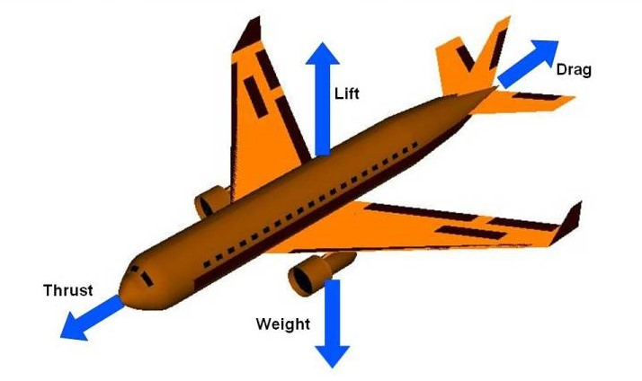
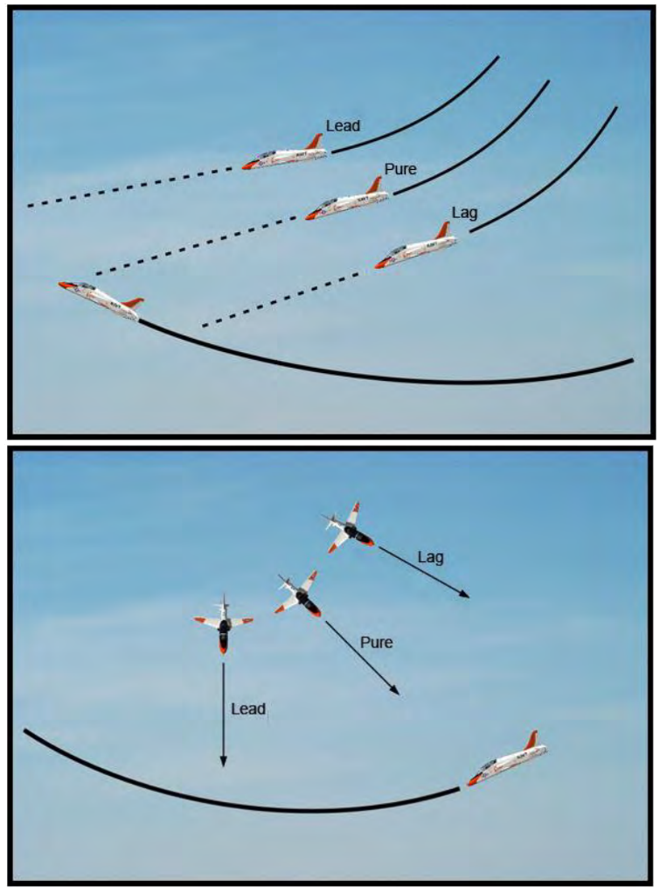
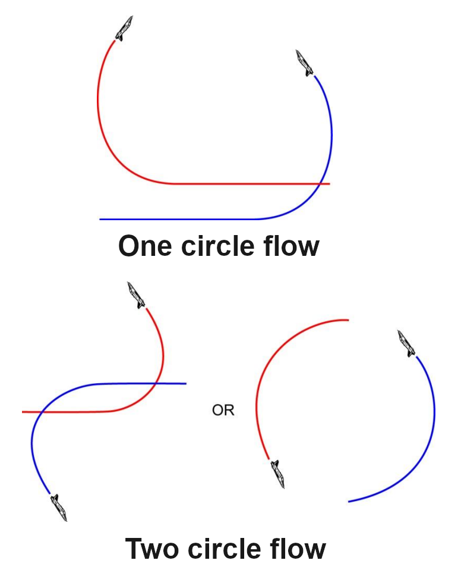

01:BFMとは何か
学習目標BFMを「技の暗記」ではなく、相対位置を継続して整える判断の体系として説明できる。
Basic Fighter Maneuvers
基本戦闘機動
BFMは、決められた機動を順番に実行する台本ではありません。相手との位置関係を観察し、次の変化を予測し、必要な機動を選ぶ——この判断を繰り返しながら、自機を必要な位置へ動かすための基礎です。[1]
成功に必要なのは、単一の技名ではなく、2機の幾何学的な関係、旋回性能、エネルギー、そして飛行の基本原理を一緒に読むことです。状況が変われば、選ぶ機動も変わります。
WHY BFM EXISTS
必要な位置を作り、相手には同じ条件を作らせない
目標は、単に「相手の後ろに見える場所」へ行くことではありません。距離・角度・接近率が使える範囲に収まる位置を作り、その関係を維持します。同時に、相手が同じ条件を得ることは難しくします。
自機の機会を作る
相手との距離と角度を整え、次の判断に使える時間と空間を確保します。
相手の機会を減らす
相手の機首・飛行経路・エネルギーを見て、一方的に有利な条件を作らせません。
WHAT TO MANAGE
読み続ける3つの判断軸
Range
2機の距離。近すぎるか、遠すぎるかを見ます。
Angles
位置と向きの関係。1種類の角度ではありません。
Closure
距離が変化する速さ。接近・一定・離隔を見ます。
判断軸をもとにした戦闘時の思考フロー
- 01観察する
- 02変化を予測する
- 03機動を選ぶ
03から01へ戻る機動後の状況を、もう一度観察します。
どれか1つだけでは判断できません。後方に見えても、距離が詰まりすぎていたり、相手がこちらへ向き直れる角度なら、維持できる位置とは限りません。
BFMは固定手順ではありません。観察・予測・機動を循環させ、変化する2機の関係を整えるために存在します。
02:基礎講座の進め方
学習目標このページで身につける基礎を、5つの段階で把握する。
用語をばらばらに暗記せず、「目的」から「確認問題」まで順に進みます。各章の最後にある要点を、自分の言葉で説明できるか確かめてください。
- 013つの原則へ
目的を知る
BFMが何を解決するために存在するのか。
- 02エネルギーへ
性能を知る
旋回とエネルギー、RateとRadiusの違い。
- 03位置関係へ
関係を読む
Range・Angles・ClosureとTurn Circle。
- 04追跡へ
流れを判断する
Pursuit・Overshoot・Circle・運動面。
- 05確認問題へ
理解を確認する
要点を整理し、12問の確認問題に答える。
基礎講座を最後まで終えたあとに、ページ最下部で次に学ぶ講座を選びます。
03:BFMの3原則
学習目標視認・相対関係・エネルギーの3視点を、具体例と結びつける。
Lose sight,
lose the fight.
見失えば、戦いを見失う。
敵機を見失うと、位置変化や次の行動を予測できません。計器だけでなく、操縦しながら相手との位置関係を継続して確認します。
速度計を見た数秒の間に、敵機が旋回方向を変えた。視線を戻したとき、次に探す方向が分からなくなる。
Maneuver relative
to the bandit.
敵機との相対関係で機動する。
自機が水平か垂直かだけでは判断しません。敵機の旋回方向と動きに対応し、必要なら相手のミスを誘うように機動します。
bandit（バンディット）は「敵機」を意味します。同じ右旋回でも相手の位置で意味が変わります。
Energy versus
nose position.
エネルギーと機首位置のバランス。
強く旋回すれば早く機首を向けられますが、速度を失います。一方、高速すぎると旋回半径が大きくなる場合があります。
いま射撃機会が生まれるなら速度を使う。まだ距離があるなら、旋回を緩めてエネルギーを温存する。
「見続ける」「相手を基準に考える」「エネルギーと機首位置を交換する」。この3つが、以降の比較や操作結果を読む軸です。
04:旋回とエネルギー
学習目標操縦入力・迎角・揚力・抗力・速度のつながりを説明できる。
航空機のエネルギー状態（energy state）は、主に速度と高度として考えます。操縦桿を引くと迎角が増え、旋回に必要な揚力を得ますが、同時に抗力も増えます。[2]

- lift 揚力
- 空気の流れから生まれ、機体を支えたり旋回させたりする力。
- drag 抗力
- 空気が機体の進行を妨げる力。強い旋回で増えやすい。
- thrust 推力
- エンジンなどが機体を前へ進める方向に作る力。
- angle of attack 迎角
- 翼の基準線と、翼に当たる空気の流れとの角度。
- G-force / load factor G・荷重倍数
- 旋回などで機体へかかる荷重を、重力との比で捉える量。
- stall 失速
- 臨界迎角を超えるなどして気流が剥離し、必要な揚力を保てない状態。
- airspeed 対気速度
- 周囲の空気に対する速度。旋回性能を考える基礎となる。
- energy state エネルギー状態
- 主に速度と高度の組み合わせとして捉える、機動に使える状態。
- energy management エネルギー管理
- 速度と高度を、位置取りのために使う・温存する・回復する判断。
- 操縦桿を引く
- 迎角が増える
- 揚力が増える
- 旋回が強くなる
- 抗力も増える
- 速度を失いやすい
迎角を増やしすぎると翼上面の気流が剥離し、揚力を保てないstall（失速）へ近づきます。強く引くほど常に良い、という関係ではありません。
Lift Limit 揚力限界
低速域で、現在の状態から生み出せる揚力の上限に近い状態。瞬間的な旋回率を得られますが、抗力が大きく、速度を急速に失います。
airspeedをturn rateへ交換するイメージ
Rate Band 持続しやすい速度帯
高い旋回率を比較的少ない損失で維持しやすい帯域。機体・搭載物・重量・高度で変わるため、固定値として暗記しません。
速さと旋回を長く両立しやすい領域
Load Limit 荷重限界
高速域などで許容最大Gに達した状態。さらに引いても旋回率が大きく伸びず、速度のため旋回半径は大きい場合があります。
高速＝小さく旋回、ではない
COMPARE 01
速度域ごとの注意点
数値を推定せず、3つの定性的な領域だけを比較します。
高い旋回率を比較的維持しやすい領域です。正確な速度帯は機体・重量・高度・搭載物で変わります。
- 主な利点
- 旋回率とエネルギー維持の両立
- 主な注意
- 固定の速度値として暗記しない
強い旋回は無料ではありません。低速では失速、高速では大きな半径、中間では持続性——速度域ごとの交換条件を意識します。
05:Turn Rate / Radius
学習目標「向きが変わる速さ」と「円の小ささ」を区別する。
Turn Rate 旋回率
1秒間に機首方向が何度変わるか。単位例はdegrees per second（度毎秒）。高いほど旋回円上を速く進みます。
Turn Radius 旋回半径
旋回円の中心から機体までの距離。小さいほど狭い空間で向きを変えられます。高速では大きくなる場合があります。
時間を見るTurn Rate1秒で向きが何度変わるか
≠空間を見るTurn Radiusどれだけ狭い円を描くか
ENERGY CHECK
瞬間旋回と持続旋回を分ける
Instantaneous Rate 瞬間旋回率
現在の速度から一時的に作れる高い旋回率。多くの場合は速度・高度として持つエネルギーを消費します。
Sustained Rate 持続旋回率
速度と高度を保ちながら続けられる旋回率。瞬間値より低くても、関係を長く作り続けられます。
Specific Energy Rate（Ps）は、機動中にエネルギーが増えているか、減っているかを表す考え方です。ここでは機種固有の数値を使わず、「いまの旋回を続けられるか」を判断する言葉として扱います。[1]
Rateは「時間あたりの角度」、Radiusは「円の大きさ」。One-CircleとTwo-Circleでは、重視される側が変わります。[3]
06:2機の位置関係
学習目標Range・Aspect Angle・HCA・Closureを混同せず、現在と次の変化を読み取る。
Range 距離
2機の直線距離。遠すぎれば攻撃できず、近すぎれば追い越す可能性があります。距離だけで有利・不利は決まりません。
Aspect Angle アスペクト角
相手の尾部方向から、自機がいる方向までの角度。自機の機首がどこを向くかとは無関係です。0°は真後ろ、90°は横、180°は正面側です。
Heading Crossing Angle HCA・針路交差角
2機の進行方向の差。同じ向きなら小さく、正面から向き合うほど180°に近づきます。位置を表すAspect Angleとは別の量です。
Closure 接近率
距離が変わる速さ。正なら接近、ほぼ0なら一定、負なら離れています。大きすぎるとOvershootしやすくなります。
Antenna Train Angle（ATA）は、自機の機首方向と相手への視線の角度です。Aspect Angleが「相手から見た自機の位置」なのに対し、ATAは「自機の機首が相手からどれだけ外れているか」を示します。[4][1]
| 角度 | 自機の位置 |
|---|---|
| 0° | 相手の真後ろ |
| 90° | 相手の横 |
| 180° | 相手の正面側 |
| 状態 | 距離の変化 | 見ること |
|---|---|---|
| 接近 | 減る | 詰まり方を監視 |
| 一定 | ほぼ不変 | 角度と位置を再確認 |
| 離隔 | 増える | 離れすぎに注意 |
Aspect Angleだけで有利・不利は決まりません。Range・HCA・ATA・Closureを一緒に読みます。
Aspect Angleは位置、HCAは進行方向の差、ATAは機首と視線の差です。距離と接近率も同時に読み、数秒後の関係を予測します。
07:Turning Room / Circle
学習目標向きを変えるために使える空間と、機体が実際に描く旋回円を区別する。
CORE CONCEPTS
Turning Roomを理解する3つの基本概念
Turning Room 旋回に使える空間
2機の間にあり、加速・距離調整・角度修正に使える空間です。水平方向だけでなく上下方向にも作れ、どちらの機体も利用できます。
Turn Circle 現在の旋回円
速度と旋回荷重から生じる旋回の大きさです。地面に固定された円ではなく、速度・G・運動面が変われば中心と大きさも変わります。
Turn Rate 円を進む速さ
旋回円の周りをどれだけ速く進むかを表します。狭い円を描く能力と、円周上を速く進む能力は同じではありません。
READING ORDER
Turning Roomを判断する3つの手順
- 012機の関係を読むRange・Angles・Closureから、次に必要な修正を決めます。
- 02使える空間を探す左右だけでなく、上下を含むTurning Roomを見ます。
- 03性能と交換条件を選ぶ必要なRate／Radiusと、消費できるエネルギーを考えます。
Turning Roomは自機だけのものではありません。空間を作れば相手にも利用される可能性があるため、2機の向きとClosureを再評価します。
Turning Roomは向きを変えるために使える空間、Turn Circleは現在の速度と荷重から生じる旋回の形です。[1]
08:Pursuit Curves
学習目標Lead・Pure・Lagを、機首を向ける場所とClosureの変化で比較する。
Lead Pursuit
前方追跡
敵機の進行方向の前へ機首を向けます。
- 距離
- 縮みやすい
- Closure
- 増えやすい
- 注意
- Overshoot
Pure Pursuit
純粋追跡
敵機の現在位置へ機首を向けます。
- 距離
- 状況による
- Closure
- 状況による
- 注意
- 中立とは限らない
Lag Pursuit
後方追跡
敵機の進行方向の後ろへ機首を向けます。
- 距離
- 詰まりにくい
- Closure
- 抑えやすい
- 注意
- 離れすぎ

Leadは距離を詰め、Lagは詰まり方を抑え、Pureは相手そのものへ向けます。状況に応じて連続的に使い分けます。
09:Overshoot
学習目標距離が詰まりすぎる原因と、相手の飛行経路を横切る結果をClosure管理と結びつける。
Overshoot（オーバーシュート）は、接近しすぎたり相手の飛行経路を越えたりして、有利な後方位置を保てなくなることです。大きすぎるClosure、長すぎるLead、高すぎる速度、相手の急旋回への遅れ、距離と角度の管理失敗が主な原因です。
EXCESS CLOSURE
距離が急に詰まる
Leadを長く使う、高い速度差を残すなどにより、相手との間隔を維持できなくなります。
見るもの：Rangeの変化とClosureFLIGHT-PATH OVERSHOOT
飛行経路を横切る
相手が進むと予測される経路を通過し、安定した追跡位置を失う状態です。
見るもの：相手の飛行経路と自機の機首位置距離が急に詰まり始めたら、相手の飛行経路を越えてから対応するのではなく、Lead・速度・旋回の強さを早めに再評価します。
Overshootは速度だけの問題ではありません。Range・Angles・Closureと追跡方法の組み合わせで起こります。[4]
10:Circle Alignment
学習目標同じ方向へ旋回していても、旋回円が一致しないことを認識する。
中心がおおむね一致
相対運動を読みやすく、安定した追跡状態を作りやすい状態です。
- 見かけの動きを観察
- 旋回円の位置を推定
- 追跡状態を再評価
中心または旋回面がずれる
同じ方向へ旋回していても、上下動や横ずれが大きく見えることがあります。
- ずれを認識
- RangeとClosureを確認
- 引き続けるか再判断
Misalignmentは常に不利とは限りません。相手が自機前方へ移動し、追加の大きなエネルギー消費なしに機会が生まれる場合もあります。初心者の目標は、まず「ずれている」と認識することです。
extend（延伸する）：一時的に敵機から距離を取り、位置関係やエネルギーを整えること。
同じ右旋回でも円は一致しません。見かけの上下動を手掛かりに、必要なら引き続けず、距離と位置を整えます。
11:One / Two Circle
学習目標旋回方向・位置関係・重要になりやすい性能を比較する。

| 項目 | One-Circle | Two-Circle |
|---|---|---|
| 旋回方向 | 同じ方向 | 反対方向 |
| 重要な性能 | Turn Radius | Turn Rate |
| 別名 | Radius Fight | Rate Fight |
| 位置関係 | Nose-to-nose | Nose-to-tail |
「One-Circleなら必ずこの機体が勝つ」という意味ではありません。初期位置・速度・エネルギー・操縦によって結果は変わります。
One-Circleは半径、Two-Circleは持続旋回率が重要になりやすい——ただし、どちらも状況全体で判断します。
12:Plane of Motion
学習目標旋回円が置かれる「面」を理解し、2次元図の限界を知る。
Plane of Motion（運動面）とは、機体が描く旋回円が置かれている面です。2機の面がほぼ同じならIn-plane、一方が面を傾けて別の平面を使えばOut-of-planeです。
ほぼ同じ運動面
2機がほぼ同じ平面上で旋回する状態。上面の比較で関係を捉えやすい基本形です。
見るもの：同じ面内のRange・Angles・Closure異なる運動面
一方が別の平面を使う状態。上面図だけでは高度方向のずれを表しきれません。
見るもの：上下方向を含む相対運動Out-of-planeの理解は、上下方向にTurning Roomを作る応用機動へつながります。このページでは、実際の関係が3次元であることの認識までを扱います。
実際の機動は3次元です。上面図は基礎を整理する道具であり、垂直方向を含むすべてを表すものではありません。[4]
13:射撃機会の基礎
学習目標安定追跡と一瞬の交差という、2つの射撃機会の違いを概念として理解する。
ここでは武器操作や照準手順ではなく、BFM上の位置関係だけを扱います。具体的な運用手順や機種固有の数値は扱いません。
Tracking Guns Solution 継続追跡の機会
敵機の動きに合わせて、照準位置に継続して捉えられる状態。Lead・適切なRange・相手の運動面との一致が必要です。
Snapshot 一瞬の交差機会
敵機が照準位置を短時間だけ横切る瞬間を利用する機会。未来位置の予測が必要で、安定した追跡ではなく、機会はごく短時間です。
Trackingは安定して追い続ける機会、Snapshotは一瞬の交差機会。どちらも位置関係の結果として生まれます。
14:初心者の要点
学習目標PART 01の判断軸を短い言葉で思い出せる。
- 01BFMは固定された技の順番ではない
- 02観察・予測・機動を循環させる
- 03相手との相対位置を基準に考える
- 04速度と高度を使い切らない
- 05瞬間旋回と持続旋回を区別する
- 06Range・Angles・Closureを同時に管理する
- 07Aspect AngleとHCAを混同しない
- 08Lead・Pure・Lagを使い分ける
- 09Closureを管理してOvershootを防ぐ
- 10Turning RoomとTurn Circleを区別する
- 11旋回円のずれを認識する
- 12One-CircleとTwo-Circleを区別する
- 13運動面と射撃機会の関係を概要として理解する
BFMは、単に強く旋回する技術ではない。変化する2機の位置関係とエネルギーを読み、必要な位置へ動くための継続的な判断である。[1]
15:12問の確認問題
学習目標答えを選ぶだけでなく、解説から判断の理由を確認する。
各問に回答すると、正解・正しい答え・短い解説・復習リンクが表示されます。
FINAL SCORE
0 / 12
16:用語集
使い方英語・日本語・説明文から検索し、関連する学習章へ戻る。
0 terms found
一致する用語がありません。別の言葉で検索してください。
17:参考資料・出典
方針動画・公開資料・提供PDFの書誌情報と外部リンクを、この章へまとめる。
本文では小さな参照番号だけを表示し、動画、書誌情報、原典、作者、権利表示、外部リンクはこの章へ集約しています。提供PDFは文章の確認と要約にだけ使い、図版は転載していません。
- USER-PROVIDED MANUAL
Republic of Korea Air Force — Basic Employment Manual F-16C
『Korean Air Force Tactics, Techniques & Procedures 3-3, Volume 5』、2005年10月1日。§4.3（印刷ページ4-12〜4-24）の目的、継続的な判断、位置関係、追跡、旋回とエネルギーを要約。本文では機種固有の数値・操作・図版を使用していません。
- PUBLIC EDUCATION
NASA Glenn Research Center — Guide to Aerodynamics
揚力・抗力・推力・迎角・旋回などを扱う公式公開教材。本文のFour Forces図もNASA Glennが公開する教材図です。
NASA公式教材 Four Forces図 - PUBLIC HANDBOOK
Federal Aviation Administration — Aeronautical Handbooks
『Pilot’s Handbook of Aeronautical Knowledge』Chapter 5と、『Airplane Flying Handbook』Chapter 3の旋回率・旋回半径の説明を参照。
PHAK公式ページ AFH Chapter 3 - OFFICIAL PUBLICATION
U.S. Air Force — AETCTTP 11-1
BFM Geometry、Overshoot、Plane of Motionなどの用語と概念を参照。T-38C／IFF固有の性能値は一般化していません。
公式PDF - PUBLIC DOMAIN IMAGES
U.S. Navy, Naval Air Training Command
CNATRA P-825の追跡曲線図と、CNATRA P-1289のCircle flow図。米国連邦政府の職務著作物としてPublic Domainと表示されています。
Pursuit curves Circle flow - VIDEO / SERIES
DCS - Introduction to BFM (Basic Fighter Manoeuvres)
独立クリエイターDCS Debriefによるゲーム環境向け解説で、Eagle Dynamicsの公式教材ではありません。続編は「Fundamentals 02 - Turning」「03 - Pursuit」「04 - Basic flows」。
Introduction 02 Turning 03 Pursuit 04 Basic flows チャンネル - BOOK
Fighter Combat: Tactics and Maneuvering
Robert L. Shaw 著、Naval Institute Press、1985年。ISBN 978-0-87021-059-4。
Google Books書誌 - OFFICIAL DOCS
- MEDIA POLICY
NASA — Images and Media Usage Guidelines
NASA画像の教育・情報目的での利用条件と、NASAによる推奨・提携を示してはならない旨を確認しています。
利用ガイドライン
本文の重要概念は、上記の公開資料とユーザー提供PDFを基に初心者向けに要約しています。特定機種の性能値や実機の操作手順は扱っていません。
18:Next Part
選択基礎を修了したあとに、次に学ぶ講座を選ぶ。